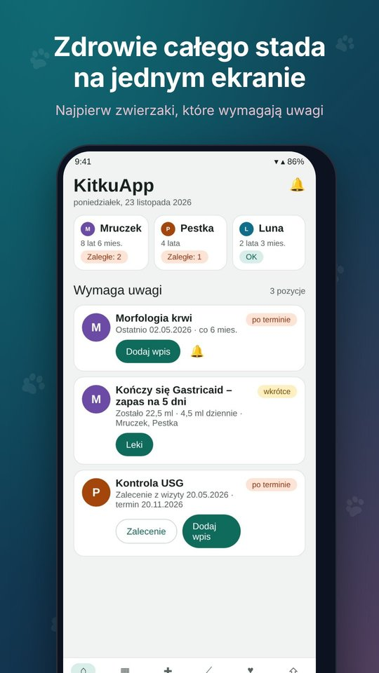
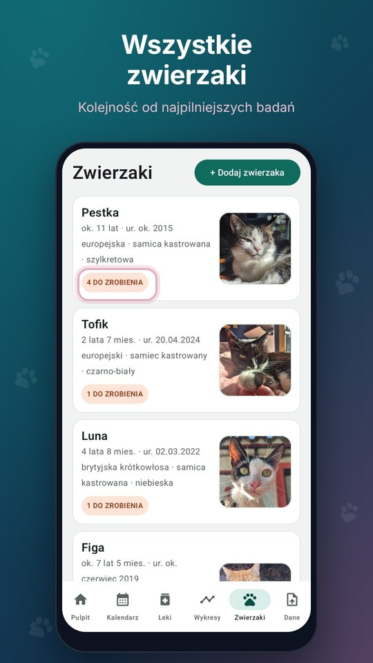
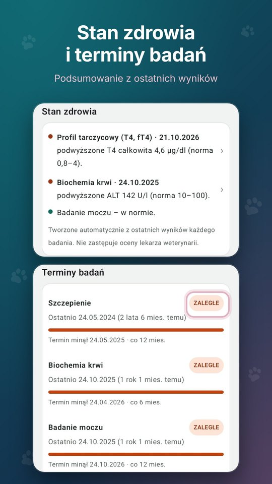
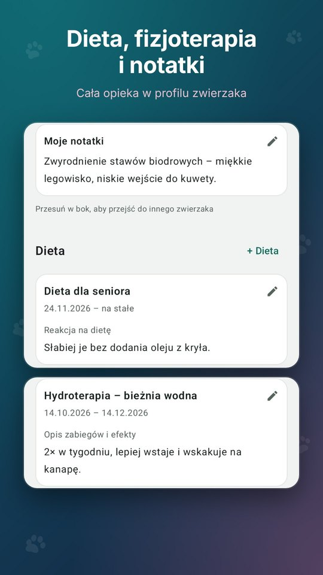
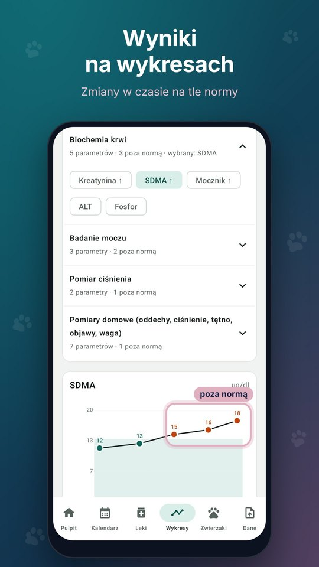
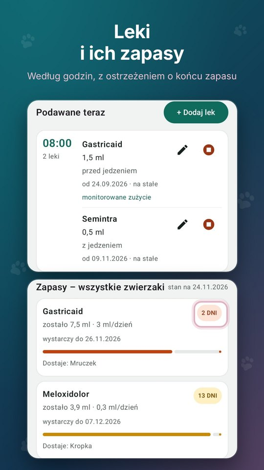
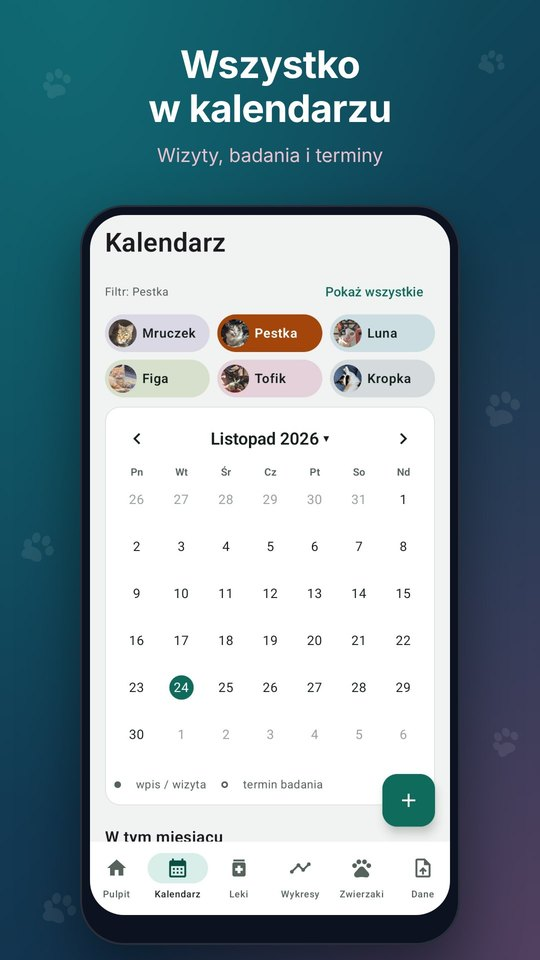
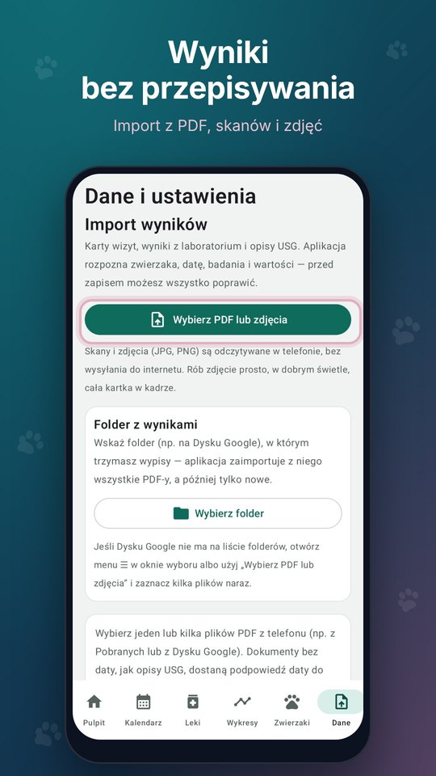
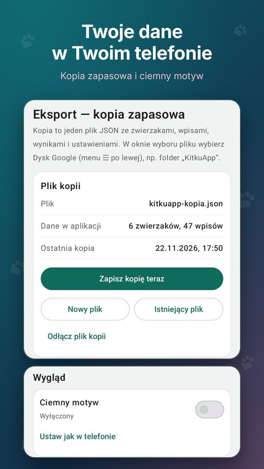

KitkuApp to darmowa aplikacja na Androida do prowadzenia historii zdrowia zwierząt domowych.
- przypomnienia o badaniach, szczepieniach i wizytach – w kalendarzu i w powiadomieniach,
- import wypisów, wyników laboratoryjnych oraz opisów USG, RTG i tomografii z plików PDF, skanów i zdjęć,
- automatyczne podsumowanie stanu zdrowia na podstawie ostatnich wyników,
- wykresy wyników z zaznaczonymi normami (normy badania moczu wbudowane w aplikację),
- ręczne wpisy z opisem, zaleceniami i wynikami,
- pomiary domowe: oddechy, ciśnienie, tętno, waga, objawy oraz ocena bólu kota z mimiki pyszczka,
- leki z godzinami podawania (także co kilka dni) i historią leczenia,
- kontrola zapasów leków z ostrzeżeniem przed ich wyczerpaniem,
- w profilu każdego zwierzaka: dieta, fizjoterapia, notatki oraz historia z wyszukiwarką,
- jasny lub ciemny motyw.
Bez reklam i bez konta. Dane zostają w telefonie, a kopię zapasową zapisujesz w wybranym przez siebie pliku.
Pobierzz Google Play, na Androida · wersja testowa
Zrzuty ekranu


















Podręcznik użytkownikaco można zrobić na każdym ekranie aplikacji
Co nowego
0.22.1 25.11.2026
- Klawiatura nie zasłania już pól formularzy (np. numeru chipa przy dodawaniu zwierzaka) – ekran przesuwa się tak, by pole z kursorem było widoczne.
Aplikacja nie zastępuje porady lekarza weterynarii. Jej główny cel to pomoc właścicielom w pilnowaniu terminów badań i zebranie wszystkich wyników z różnych lecznic w jednym miejscu, na telefonie właściciela. Także po to, by pamiętać o wszystkim przy kolejnej wizycie u weterynarza. Powstała z myślą o moim stadzie, rozwijam ją po pracy. Jeśli pomogła Twoim kotom, postaw karmę moim (bo karma wraca) ;)
Postaw kotkom karmęwsparcie rozwoju aplikacji przez buycoffee.to